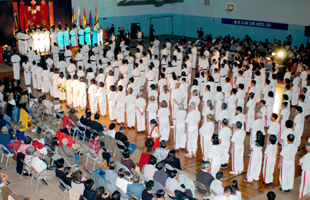

|
|
Introduction
|
 |
|
The International Federation Of The Vietnamese Traditional Martial Arts
Bình-Ðịnh Sa-Long-Cương
|
For nearly 30 years of separation, the disciples of the Binh-Ðinh Sa-Long-Cuong School of
Vietnamese Traditional martial arts around the world had the opportunity to gather for the first time,
at a conference in Montreal, Canada from September 25th to October 2nd, 2004.
The Association of disciples of Sa Long Cuong in Montreal was the instigator and organizer of this
conference, with the participation of many Masters and disciples around the world, in particular from
France, the United States, Vietnam and Canada.
The Conference has been chaired by a committee, composed of the most veteran masters of the discipline:
|

|
Master Le-Van-Van, Chairman of the Committee. Master Le-Van-Van is currently Chief Instructor of the
Sa-Long-Cuong School in Vietnam. He is representing Master Truong-Ba-Duong, the son of the
Grand Master Founder, to participate in the conference. Master Le van Van has the privilege
to be close to the Grand Master Founder Truong-Thanh-Dang during his last few years of life.
|
|
|
|
Master Tran Trong Hieu and Master Nguyen Chau Thien, Vice Chairmen of the Committee.
Masters Hiêu and Thiên are the co-founders of the Association of disciples of Sa-Long-Cuong
in Montreal, since the early 1990s.
|
|
|
The most notables and encouraging success of the Conference were:
|
|
A. The Establishment of The International Federation of
BINH-DINH SA-LONG-CƯƠNG (IF-BDSLC), A Vietnamese
Traditional Martial Arts School Systems.
|
|
The objective of the Federation is to consolidate and to unify
the training program, according to the teaching and the traditions as taught by the Grand Master Truong Thanh Dang.
|
|
The IF-BDSLC committee will be in charged for the consulting,
communicating and establishing an organizational structure and a training program for the
Binh-Ðinh Sa-Long-Cuong International Federation.
|
|
|
B.Standardize The Training Program.
|
The elaboration of a common training program in order to
standardize the level of proficiency of different belts. A training program has been proposed
and accepted by Senior Masters.
The conference has ended on a very encouraging atmosphere
for the development of a more uniform training program and for a better communication between
disciples around the world, through the International Federation Binh Ðinh Sa Long Cuong.
In order to allow disciples around the world to exchange
their experiences in martial art, it is convened, pending favorable conditions, that a conference
will be organized every three years, on the date of the anniversary of the death of the Grand Master
Founder Truong Thanh Dang.
|
|
|


|